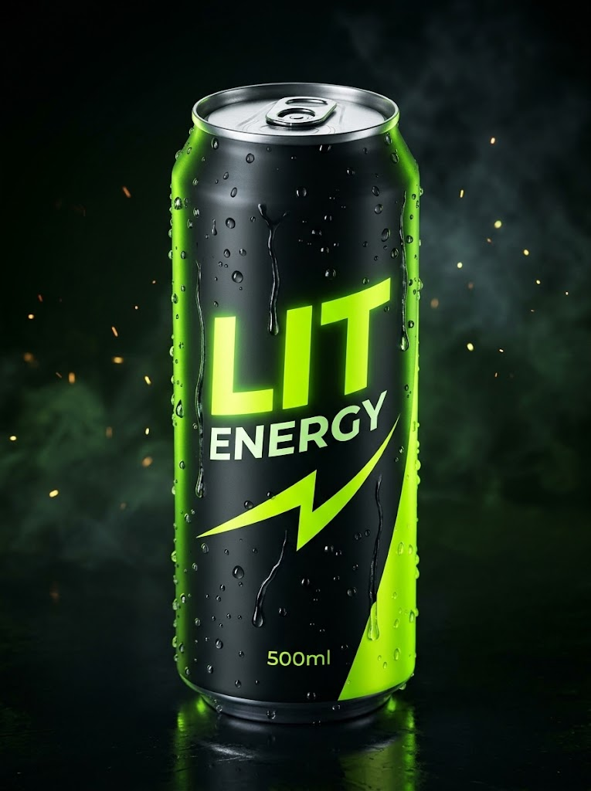

⚡ ENERGY LAB
Если бы ты был энергетиком?
7 быстрых вопросов — и алгоритм соберёт твой энерго-паспорт, банку, слоган и честный вердикт. Собери все 9!

⚡ ENERGY LAB
Газируем твою банку...
Подбираем бренд, выписываем диагноз по ответам и печатаем паспорт
⚡ ENERGY LAB
Категория
ИМЯ • БРЕНД
Экспертный вердикт лаборатории
Активный состав на 500 мл
Твоя полка коллекции (3×3)
Шуточный фан-тест. Не является рекламой напитков и не призывает к употреблению энергетиков.